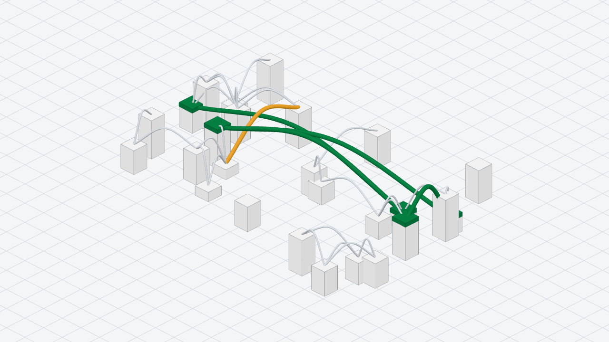
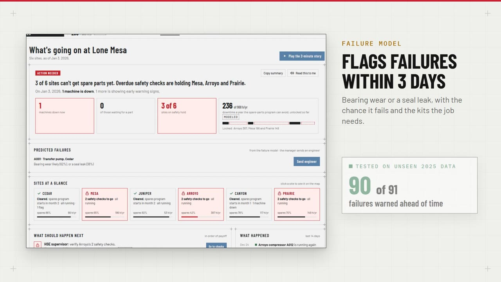

Data engineering · ML · BI
Austin Nguyen
I ship data systems end to end: streaming pipelines, ML models, and the apps on top.
8.7K/s
live events through my streaming pipeline
90 of 91
equipment failures flagged in advance
3.95
GPA, UH Bauer MIS

Interdomain
Parvius